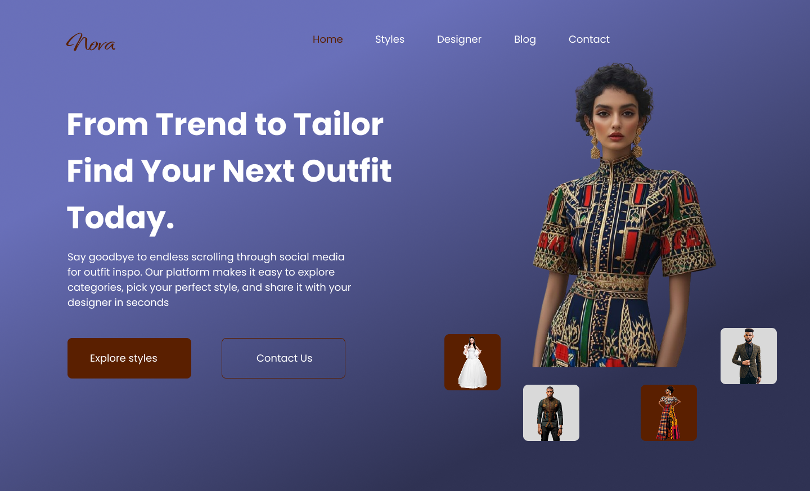

Nova - Fashion Landing Page
UI/UX Design & Front-end Concept
Overview
Nova is a high-end fashion landing page designed to immediately capture attention with strong visual storytelling and clear call-to-actions. Built in Figma, it blends minimalist UI trends with an emotional connection to fashion enthusiasts.
User Research
Method: Competitor analysis and informal interviews with 8 fashion consumers.
Key Insights:
- Users are drawn to bold visuals and fast navigation.
- Clear CTAs ("Explore Styles", "Contact Us") drive higher interaction.
- Clutter-free layouts enhance trust and luxury perception.
Problem Statement
How might we design a landing page that builds instant brand trust while encouraging users to explore outfit styles effortlessly?
Design Process
Personas: Developed personas like "Style Seeker" and "Occasional Shopper" based on research insights.
Wireframes: Sketched wireframes emphasizing a strong hero section, quick access to categories, and minimalistic design.
Prototyping: Iterated several hero designs, testing visual hierarchy, CTA placement, and emotional impact.
Visual Design: Used modern purple (#7F56D9) with soft white text for elegance. Added earthy button tones for a balanced pop. Prioritized negative space for a clean, luxury feel.
Development
Tech Stack: HTML5, CSS3, Five Server (live preview).
Features:
- Fully responsive layout.
- Smooth typography scale.
- Hover interactions for call-to-action elements.
Challenges
Challenge: Maintaining visual impact across different screen sizes (desktop, tablet, mobile) without losing design balance.
Solution: Carefully adapted responsive grids, scaled typography dynamically, and preserved whitespace at all breakpoints for clean UX.
Results
Outcome: A polished, portfolio-ready fashion landing page demonstrating visual design skills, UX thinking, and responsive development fundamentals.
Visuals

Desktop View
Mobile View